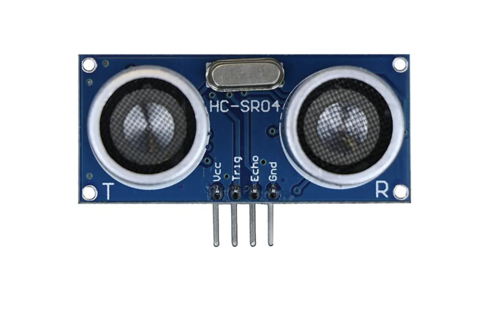

Welkom, jonge uitvinders! 👩🔬👨🔬 Jullie zijn geselecteerd voor een speciale missie in het Ultra Geheime Laboratorium. Jullie taak? De krachten ontrafelen van de mysterieuze HC-SR04 ultrasonesensor!
Vraag: Wat denk je dat deze coole sensor kan doen? 🤔
Goed gedaan, rekruten! 🎉 De HC-SR04 meet inderdaad afstand. Maar hoe? Laten we dieper in de werking duiken!
Ultrageluid is geluid met een frequentie hoger dan wat mensen kunnen horen (boven 20 kHz). Onze sensor gebruikt geluid van ongeveer 40 kHz! Dat is zo hoog dat alleen vleermuizen en dolfijnen het kunnen horen! 🦇🐬
Om de afstand te berekenen, gebruiken we deze formule:
Afstand = (Tijd * Geluidssnelheid) / 2
We delen door 2 omdat het geluid heen en weer reist!
Vraag: Waarom gebruiken we ultrageluid in plaats van normaal hoorbaar geluid?
Nu wordt het echt cool! 😎 We gaan onze eigen afstandsdetector bouwen met de HC-SR04. Hier is wat je nodig hebt:
Volg deze stappen om je detector te bouwen:
Vraag: Waarom verbinden we de Trig en Echo pinnen met verschillende pinnen op de Arduino?
Geweldig werk, techneuten! 🦸♂️🦸♀️ Nu gaan we onze detector tot leven brengen met code. Hier is een uitgebreide uitleg van de code:
// Definieer de pinnen
const int trigPin = 9;
const int echoPin = 10;
void setup() {
// Start seriële communicatie
Serial.begin(9600);
// Stel de pinmodes in
pinMode(trigPin, OUTPUT);
pinMode(echoPin, INPUT);
}
void loop() {
// Variabelen voor de duur en afstand
long duration, distance;
// Zorg ervoor dat de trigger pin leeg is
digitalWrite(trigPin, LOW);
delayMicroseconds(2);
// Stuur een 10 microseconde puls naar de trigger pin
digitalWrite(trigPin, HIGH);
delayMicroseconds(10);
digitalWrite(trigPin, LOW);
// Lees de echo pin, en retourneer de reistijd in microseconden
duration = pulseIn(echoPin, HIGH);
// Bereken de afstand
distance = (duration/2) / 29.1; // Snelheid van geluid is 29.1 microseconden per centimeter
// Print het resultaat naar de seriële monitor
Serial.print(distance);
Serial.println(" cm");
// Wacht even voordat we opnieuw meten
delay(1000);
}
Upload de code naar je Arduino en open de Seriële Monitor. Je zou nu de afstand moeten zien! 📏✨
Vraag: Waarom delen we de duur door 2 in de berekening van de afstand?
Nu je detector werkt, is het tijd om te experimenteren! 🧪 Hier zijn wat coole ideeën:
Kies een experiment en pas je code aan om het uit te voeren!
Vraag: Welk oppervlak denk je dat het moeilijkst te meten is met de ultrasonesensor?
Gefeliciteerd, ultrasone avonturiers! 🎉 Jullie hebben de geheimen van de HC-SR04 sensor ontrafeld en zijn nu officiële Ultrasone Meesters!
Laten we nog eens kijken naar wat we hebben geleerd:
Wat kun je nog meer doen met je nieuwe superkracht? 💪
Wist je dat? Sommige auto's gebruiken vergelijkbare ultrasoonsensoren voor parkeerhulp en automatisch parkeren! 🚗
Laatste Uitdaging: Kan je bedenken hoe je de HC-SR04 zou kunnen gebruiken om de snelheid van een bewegend object te meten? 🏎️